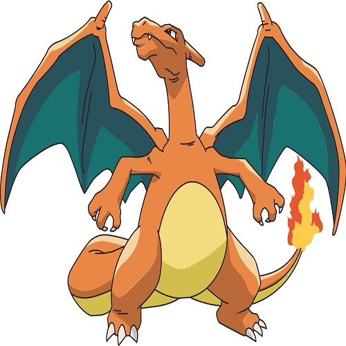

Los pokémon
Los pokémon son seres maravillosos, llenos de particularidades, se encuentran en todo el mundo, algunos son propios de una región y solo se pueden encontrar allí, otros son únicos, tanto que su presencia es casi nula y para muchos no son más que leyendas. Sim importar sus características físicas o habilidades especiales, todos los pokémon tienen algo en común, hacen felices a los seres humanos, es impensable vivir en un mundo sin ellos.

Pikachu

Es el pokemon más representativo de la franquicia, siendo además un icono de los videojuegos, el anime y la cultura japonesa. En el anime es el principal compañero y amigo de Ash Ketchump.
Charizard

Mi pokémon favorito, uno de los primeros dragones en aparecer en la franquicia aunque no cuenta con el tipo dragón, destaca por su ataque físico, ataque especial y gran velocidad.